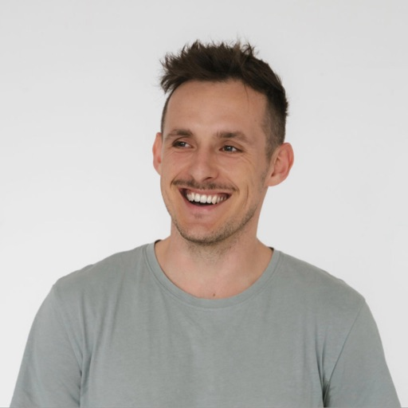
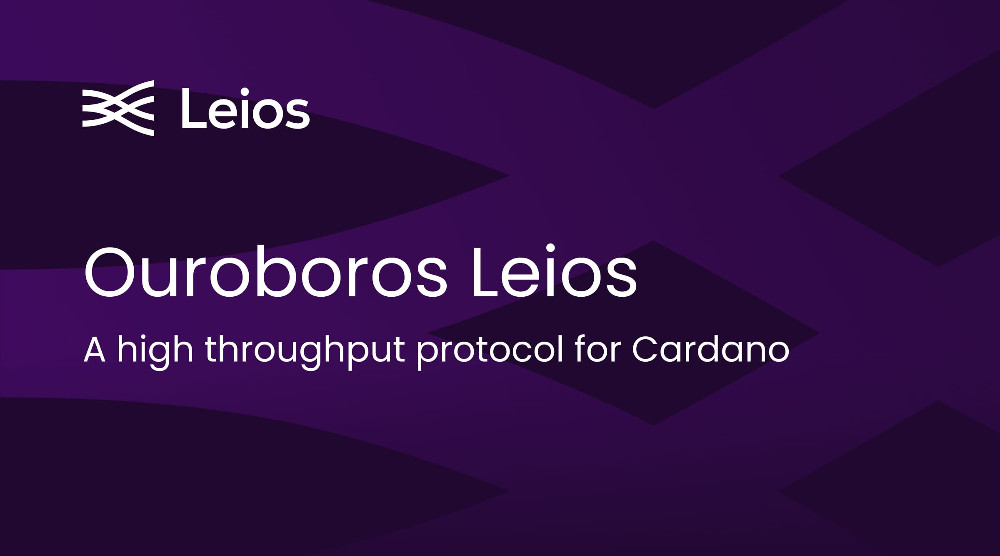
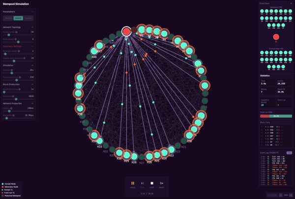

Willi WolffSoftware Engineer • Technical Architect • Builder Software Engineer • Technical Architect • Builder
Hey! I'm Willi, a software engineer with 10+ years across enterprise (Deloitte), blockchain infrastructure (IOG/Cardano), mobile, and IoT. Currently technical architect for a Byzantine-resistant pub/sub network at IOG. Founder DNA, deep in distributed systems and secure software — curious by default, focused when it counts.
Hey! Ich bin Willi, ein Software Engineer mit über 10 Jahren Erfahrung — von Enterprise (Deloitte) über Blockchain-Infrastruktur (IOG/Cardano) bis zu Mobile und IoT. Aktuell technischer Architekt für ein Byzantine-resistentes Pub/Sub-Netzwerk bei IOG. Gründer-DNA, zuhause in verteilten Systemen und sicherer Software — neugierig von Natur aus, fokussiert wenn es zählt.
Technologies Technologien
Languages Sprachen
Frameworks & Tools Frameworks & Tools
Infrastructure & Data Infrastruktur & Daten
Blockchain & Cryptography Blockchain & Kryptographie
Experience Erfahrung
Input Output Global (IOG)
4 yrs 7 mo · Remote · Contract · Nov 2021 – Present 4 Jahre, 7 Monate · Remote · Auf Vertragsbasis · Nov 2021 – HeuteTechnical Architect – Byzantine-Resistant PubSub Network Technischer Architekt – Byzantine-Resistant PubSub Network
Leading R&D for a Byzantine-resistant pub/sub network — formal verification and prototyping Leite R&D für ein Byzantine-resistentes Pub/Sub-Netzwerk — formale Verifikation und Prototyping
- Lead a team of 4 engineers & researchers designing a Byzantine-resistant pub/sub overlay network Leite ein Team von 4 Ingenieuren & Forschern beim Entwurf eines Byzantine-resistenten Pub/Sub-Overlay-Netzwerks
- Formally verifying the SecureCyclon peer-sampling protocol stack and building a working prototype via spec-driven development (spec-kit) Formale Verifikation des SecureCyclon Peer-Sampling-Protokoll-Stacks und Entwicklung eines funktionsfähigen Prototyps mittels Spec-Driven Development (spec-kit)
- Reevaluating peer-sampling protocols for specific security properties Neubewertung von Peer-Sampling-Protokollen hinsichtlich spezifischer Sicherheitseigenschaften
Technical Architect – Ouroboros Leios Technischer Architekt – Ouroboros Leios
Led R&D for Ouroboros Leios, a high-throughput protocol for Cardano blockchain Leitete R&D für Ouroboros Leios, ein Hochdurchsatz-Protokoll für die Cardano Blockchain
- Direct team of 8 researchers & engineers exploring high-throughput overlay protocol Leite Team von 8 Forschern & Engineers bei der Erforschung eines Hochdurchsatz-Overlay-Protokolls
- Authored comprehensive CIP-0164 specification and architecture documentation Verfasste umfassende CIP-0164 Spezifikation und Architekturdokumentation
- Host monthly public demos on YouTube (~5k average views) with live Q&A, translating complex research into accessible developer content Veranstalte monatliche öffentliche Demos auf YouTube (~5k durchschnittliche Aufrufe) mit Live Q&A, übersetze komplexe Forschung in zugänglichen Developer Content
- Organized week-long technical workshop bringing together researchers, engineers, and community members Organisierte einwöchigen technischen Workshop mit Forschern, Engineers und Community-Mitgliedern
- Report protocol research and progress to the public domain through the project website and regular reports at leios.cardano-scaling.org Berichte Protokollforschung und Fortschritte für die Öffentlichkeit über die Projekt-Website und regelmäßige Reports unter leios.cardano-scaling.org
- Investigated MEV (Miner Extractable Value) impact on Leios via mempool analysis and simulation Untersuchte MEV-Auswirkungen (Miner Extractable Value) auf Leios mittels Mempool-Analyse und -Simulation
Technical Architect – Lace Wallet Technischer Architekt – Lace Wallet
Led technical architecture for Lace with Event-Driven Architecture, delivering 45% performance improvement Leitete technische Architektur für Lace mit Event-Driven Architecture, erreichte 45% Leistungsverbesserung
- Re-engineered wallet backend to event-driven architecture with CQRS pattern → 45% latency reduction, >60% cost savings Entwickelte Wallet-Backend zu event-driven architecture mit CQRS-Pattern um → 45% Latenzreduktion, >60% Kosteneinsparungen
- Built custom chain indexer with bloom filters achieving >2,000 tx/s ingest capacity Entwickelte Custom Chain Indexer mit Bloom-Filtern mit >2.000 tx/s Ingest-Kapazität
- Led 7-person cross-functional team delivering MetaDex swap feature integrating Plutus smart contracts Leitete 7-köpfiges cross-funktionales Team bei der Entwicklung des MetaDex Swap Features mit Plutus Smart Contracts
- Authored CIP proposal for wallet indexing standards following DDD bounded context principles Verfasste CIP-Vorschlag für Wallet-Indexing-Standards nach DDD Bounded-Context-Prinzipien
Solutions Architect Solutions Architect
Designed blockchain solutions and educated enterprise partners on Cardano architecture Entwarf Blockchain-Lösungen und schulte Enterprise-Partner in Cardano-Architektur
- Designed complete Plutus smart-contract stack for collateralized debt position (CDP) platform Entwarf vollständigen Plutus Smart-Contract Stack für Collateralized Debt Position (CDP) Plattform
- Delivered technical workshops and hands-on training for 100+ Amazon engineers on distributed systems architecture Führte technische Workshops und Hands-on Training für 100+ Amazon Engineers zu Distributed Systems Architektur durch
- Created educational content and documentation enabling developer adoption of complex technical concepts Erstellte Educational Content und Dokumentation zur Förderung der Developer Adoption komplexer technischer Konzepte
Mobility Data Lab GmbH
1 yr 9 mo · Berlin, DE · Feb 2020 – Nov 2021 1 Jahr, 9 Monate · Berlin, DE · Feb 2020 – Nov 2021Senior Software Engineer Senior Software Engineer
Built IoT and data processing systems for connected vehicle platform Entwickelte IoT- und Datenverarbeitungssysteme für Connected-Vehicle-Plattform
- Delivered complete over-the-air (OTA) fleet-update pipeline for connected vehicle hardware Lieferte vollständige Over-the-Air (OTA) Flotten-Update-Pipeline für Connected-Vehicle-Hardware
- Built WiFi audience-tracking system using embedded devices (Rust) in vehicles Entwickelte WiFi-Audience-Tracking-System mit Embedded Devices (Rust) in Fahrzeugen
- Launched pilot with 20+ vehicles for Miles and Share Now car-sharing services Startete Pilot mit 20+ Fahrzeugen für Miles und Share Now Carsharing-Services
- Developed real-time ad pricing based on audience measurement (Vert.x, ELK stack) Entwickelte Echtzeit-Werbepreis-Berechnung basierend auf Audience-Messung (Vert.x, ELK Stack)
Deloitte US
3 yrs 2 mo · Austin, TX → Ulm, Germany · Sep 2016 – Nov 2019 3 Jahre, 2 Monate · Austin, TX → Ulm, Deutschland · Sep 2016 – Nov 2019Lead Engineer & Senior Software Engineer Lead Engineer & Senior Software Engineer
Led migration of 16M lines of code, saving €6M annually in licensing costs Leitete Migration von 16M Zeilen Code, sparte €6M jährlich an Lizenzkosten
- Cut annual license costs by €6M for major German insurance company Reduzierte jährliche Lizenzkosten um €6M für großes deutsches Versicherungsunternehmen
- Grew team from 3 → 20 engineers after promotion to lead Vergrößerte Team von 3 → 20 Engineers nach Beförderung zum Lead
- Achieved >99.9% compatibility through differential testing framework Erreichte >99,9% Kompatibilität durch Differential-Testing-Framework
Software Engineer Software Engineer
Built the migration toolchain that moved 16M lines of legacy code to Java Entwickelte die Migrations-Toolchain, die 16M Zeilen Legacy-Code nach Java migrierte
- Architected 3-stage migration toolchain (parser → converter → runtime) for 16M LoC transformation Entwarf 3-stufige Migrations-Toolchain (Parser → Converter → Runtime) für 16M LoC Transformation
- Moved 16M lines of code from a legacy DSL to Java 8 Migrierte 16M Zeilen Code von einer Legacy-DSL nach Java 8
CityXcape Inc.
1 yr 7 mo · San Francisco, CA · Feb 2015 – Sep 2016 1 Jahr, 7 Monate · San Francisco, CA · Feb 2015 – Sep 2016Co-Founder & CTO Co-Founder & CTO
Co-founded social discovery platform, raised €150k seed funding Co-gründete Social-Discovery-Plattform, sammelte €150k Seed-Funding
- Co-founded social discovery platform for exploring cities through community recommendations Co-gründete Social-Discovery-Plattform zum Erkunden von Städten durch Community-Empfehlungen
- Raised ~€150k in seed funding from angel investors Sammelte ~€150k Seed-Funding von Angel-Investoren
- Built iOS native app (Swift) and Django/Ruby on Rails backend from concept to App Store launch Entwickelte iOS Native App (Swift) und Django/Ruby on Rails Backend vom Konzept bis zum App Store Launch
Published Work Veröffentlichungen
CIP-0164: Ouroboros Leios
Canonical architecture and design specification for Cardano's high-throughput overlay protocol — an open industry RFC comparable to Bitcoin's BIPs and IETF standards. Kanonische Architektur- und Designspezifikation für Cardanos Hochdurchsatz-Overlay-Protokoll — ein offener Industrie-RFC vergleichbar mit Bitcoins BIPs und IETF-Standards.
Projects Projekte

Principal author of CIP-0164, the canonical architecture design document for Cardano's high-throughput protocol. Built interactive web-based simulator and documentation site with formal specification rendered via custom agda-web-docs-lib.
Dump it! – Voice-First Note Taking App
Voice-native cross-platform app built on Supabase (PostgreSQL) with AI-powered intent classification, semantic search, and end-to-end encryption. Features Row Level Security, Edge Functions, real-time sync, Event Sourcing architecture, and vector embeddings.
Berlin-based freelance agency specializing in Supabase and PostgreSQL backends, web/mobile apps, and AI automation.
Modern website and booking system for a dive center in Cyprus. Mobile-first design with focus on user experience and easy booking management.

Interactive mempool visualization tool for the Leios protocol. Explores front-running opportunities and attack vectors to build educational resources for community understanding of protocol security.
Production NFT marketplace on Cardano with smart contract integration for trading, bidding, and swapping. Implemented wallet standards and event-driven sync patterns later adopted by IOG.
Extended Dolos chain indexer to support DEX script addresses for Lace wallet's swap feature. Custom fork enabling efficient DEX data retrieval and aggregation.
Extended Cardano transaction library with UTXO chaining capability for complex multi-transaction workflows and atomic operation sequences.
Extended Cardano indexing tool for smart contracts across major DEXes (SundaeSwap, Minswap, WingRiders, MuesliSwap). Comprehensive DeFi data aggregation.
Published npm package for swap transaction construction across multiple Cardano DEXes. Foundation for Lace wallet's swap feature.
Berlin Pool – Cardano Stakepool
Production Cardano consensus node infrastructure. Operated 2,000+ blocks with 99.9% uptime and managed 15M+ ADA delegation.
Educational blockchain implementation from scratch. Built proof-of-work consensus, block validation, and peer-to-peer networking.